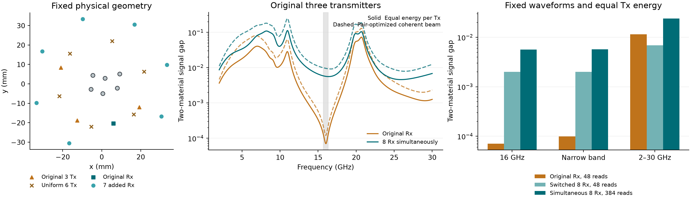
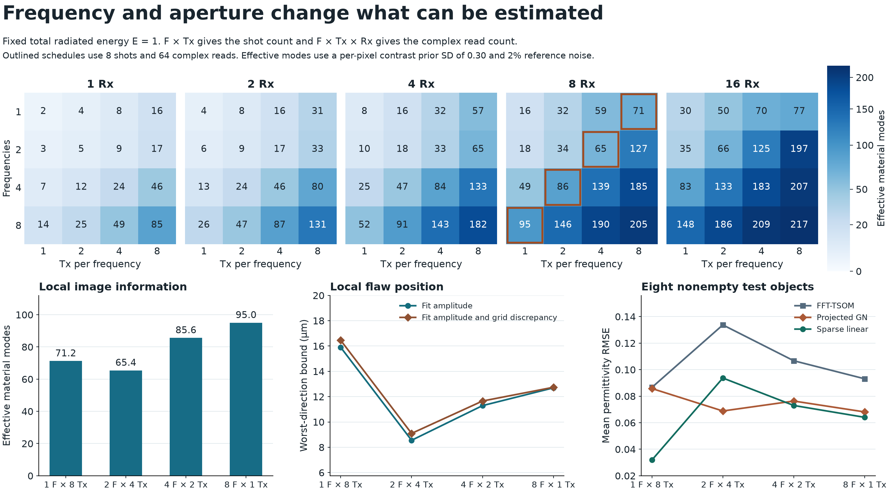
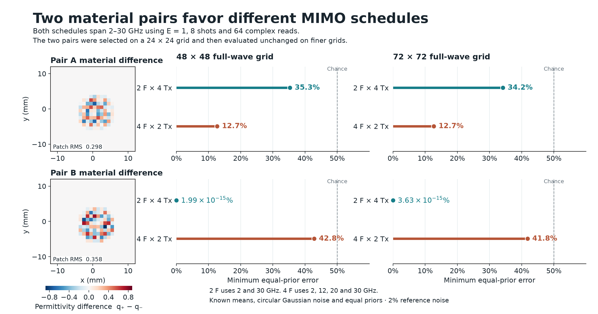
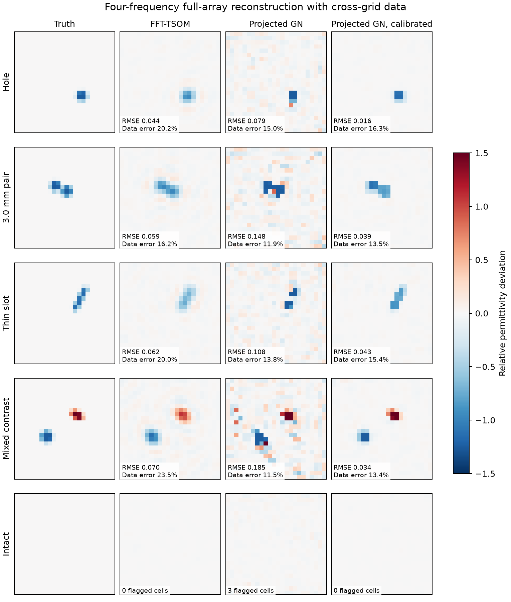
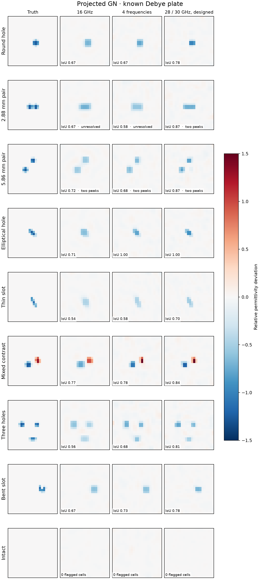
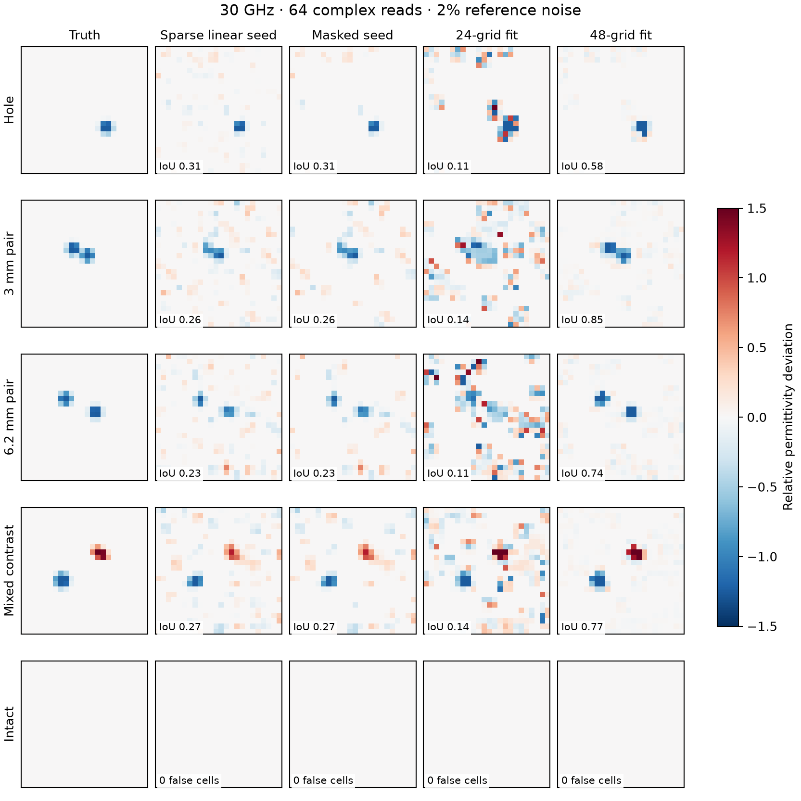
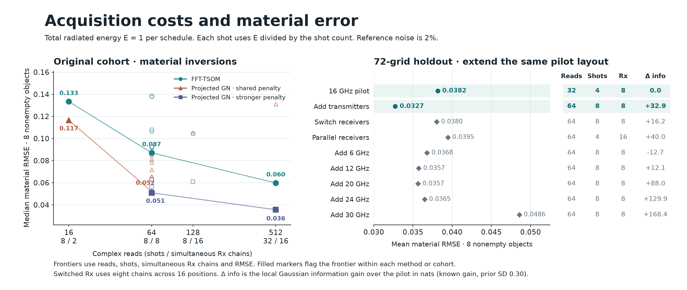
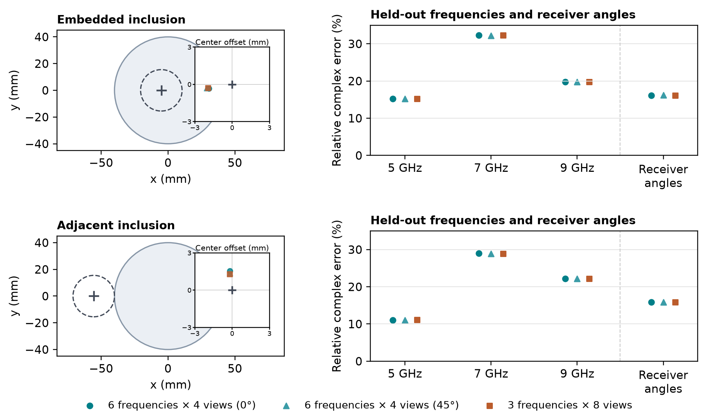

多测几个频率，还是多换几个角度？
2–30 GHz 的宽带 MIMO 中，同样发 8 次、读 64 个复数，固定增加发射角在两批新缺陷上给出了最低的整图材料误差，却漏分了两对近双孔。固定补测 24 GHz 分开了这两对孔。测量怎么分，要先说清楚要恢复介电常数，还是要数清相邻缺陷。
- 115.8 倍与 20.3 倍。 对 R14 的一对已知材料，扩频和换接收角分别能拉大两份读数的距离。两种收益不能直接相乘。
- 2.885 mm。 同样用 8 次发射和 64 条复读数，28/30 GHz 在配对无损与已知 Debye 仿真中都分出了这个近双孔。用相同 FFT-TSOM 和全波 GN 重建时，另两种分配均未分出。
- 0.047 → 0.090。 仍用 28/30 GHz，若把实际有色散的板当成常数介质，材料 RMSE 中位数接近翻倍。两个孔仍有两个峰。
- 前向网格有时比再迭代重要。 30 GHz 原测试中，同选区细网格修正的材料 RMSE 均值为 0.045，粗网格对照为 0.250。
- 用虚拟试扫选频，材料误差低于 Fisher 规则。 两批新外验上，固定补发射角仍取得最低的平均材料误差。 查看顺序选频
同一对材料可以靠扩频分开，也可以靠换角度分开
R14 找到两份相差 7.9733 RMS 的材料，在原单接收点和 16 GHz 的 ±2% 频带内仍可解释相同读数。本轮保留旧三发的物理位置，总辐射能量和 48 个发射时隙固定，比较新的频率和接收位置。读数距离是两份复散射向量的欧氏距离，包含幅度和相位差。
| 旧三发，48 次发射 | 原单收 · 48 复数 | 轮换八收 · 48 复数 | 并行八收 · 384 复数 |
|---|---|---|---|
| 15.68–16.32 GHz | 0.0000992 | 0.0020104 | 0.0056862 |
| 2–30 GHz 八频 | 0.0114897 | 0.0068940 | 0.0240389 |
只换成宽频时，同一个接收器的两份读数拉开约 116 倍。在窄带轮换八个接收位置，同样 48 个读数拉开约 20 倍。宽频下，轮换时各时隙舍弃了原接收点的部分读数，该轮换反而只得到原单收距离的 60%。并行接收可以同时保留这些角度，读数和接收通道时间都增加八倍。
在明确的噪声球下，16 GHz 单收仍有重叠，16 GHz 轮换八收及 22 GHz 原单收都能严格分开这两份材料。这是针对已知两个候选的结果，适用范围是六盘线源模型。用任意相位混合多个端口时还要约束实际激励，单约束远场辐射会偏向功放难以实现的抵消波形。

相同的读数预算，可以看清不同的材料变化
另取一块相对介电常数为 2.25 的 24 mm 方板。每个 1 mm 材料格都可有自己的介电偏差。在保持总能量、8 次独立发射和 64 个复读数的条件下，把发射时隙分给 1、2、4 或 8 个频率，各频留给发射角的数量随之减少。看清材料变化的方向，要看整套测量对这一变化的复场响应。
材料变动很小时，用雅可比把每一种材料变化映射到复读数。有效维数把高于噪声的方向接近计作 1，弱方向按强度打折。在已知板和固定噪声下，四种基本分配的有效维数约为 71、65、86、95。从一频换成两频时，增加了 30 GHz，同时把一半时隙用在对这块小板作用较弱的 2 GHz，并减少每频发射角。结果随频段和端口而变。

两种同预算设计，在两对材料的全波计算中给出相反排序
2 频 × 4 发 × 8 收和 4 频 × 2 发 × 8 收都覆盖 2–30 GHz，复读数和总能量相同。在 48 网格为每对候选完整计算复散射场后，第一对在两种设计下的理论最优误判率分别为 35.3% 和 12.7%。第二对的次序反过来，分别为 低于 10−14% 和 42.8%。这个误判率假定两个候选均已知、先验各半、噪声为圆复高斯，描述两份读数有多容易混淆。
保持两对材料原样，用 72 网格直接重算，第一对仍为 34.2% 和 12.7%，第二对仍为低于 10−14% 和 41.8%。第一对虽呈现了清楚的排序反转，但较易方案未达到构造阶段设想的 5% 误判目标。

频率与空间的公式98 种配置的有效维数材料对及复场判别数值72 网格复算自由度图 PDF材料对图 PDF
这对任何恢复算法意味着什么？ 在 24×24 离散模型、已知增益和规定噪声下，只要允许每个像素独立变化，两频四发与四频两发的最坏期望整图误差就分别严格大于 0.0460 和 0.0642。用四张材料图和向外舍入的全波求解，19.5 秒即可证明。更细网格保留了两对材料的相反排序，具体误差常数会变。
数据拟合变好时，材料图可能变差
每次先测物体，再减去同宿主的空板响应。二维 TM 仿真用 48×48 网格生成复读数，反演在 24×24 网格上估计 576 个实材料值。FFT-TSOM 从接收奇异模式固定一部分电流，其余电流用投影后的二维低频傅里叶基拟合。全波投影 GN 每次按当前材料重新求解波动方程。两种方法都使用同一材料盒，初始图都是均匀板。
使用 512 个复读数的密集四频设计时，同权全波 GN 的数据残差中位数为 12.6%，材料 RMSE 为 0.131。在单独三个开发对象上加重正则后，独立组数据残差是 14.1%，材料 RMSE 却降到 0.036，空板从 3 个误标格降至 0 个。相同数据的 FFT-TSOM 材料 RMSE 为 0.060。这里的 RMSE 是全板 576 格的介电偏差误差均方根。

30 GHz 的无噪圆孔，只换观测生成网格就把同权 GN 的材料 RMSE 从 0.010 升到 0.063，两份数据残差都约为 0.1%。FFT-TSOM 也会出现两种残差分离。30 GHz 辅助电流的接收残差几乎为零，输出材料重新做全波后，残差中位数为噪声标准差的 4.75 倍。
28/30 GHz 盲测分出了近双孔，介电值仍依赖宿主模型
用公开布置的九个虚拟缺陷位置选定 28/30 GHz，每频四发八收。新盲测包含八个随机缺陷和一个空板，有直槽、弯槽、正负混合和两种孔间距。无损与 Debye 两个模型共用几何和逐元素噪声。三种采样方案各用 64 复读数、8 次发射和同一总能量。先写出 135 组预测，再读取真实材料评分。
| 校准全波 GN 的材料 RMSE 中位数 | 16 GHz | 2、12、20、30 GHz | 28/30 GHz |
|---|---|---|---|
| 无损板，已知常数模型 | 0.059 | 0.052 | 0.051 |
| Debye 板，已知色散模型 | 0.061 | 0.054 | 0.047 |
| Debye 板，误用常数模型 | 0.080 | 0.083 | 0.090 |
三臂都分出了 5.858 mm 的宽双孔。FFT-TSOM 和全波 GN 都只在 28/30 GHz 分出 2.885 mm 的近双孔。用错宿主的 28/30 GHz GN 依然看到两个峰，对比度保留率却从 73% 降到 31%。这个比例在真实缺陷区域内计算，表示估计材料在真实材料方向上的幅度。实物生产中的空板误报率仍需更多独立空板测量。
查看九个 Debye 盲测对象的材料图

用最终材料误差选频，改善了主动规则
用 16 GHz 先导重建一张初图，再以初图为材料，在电脑里用全波模型试算各补测方案，选择预计最终材料误差最低的一项。两批独立 72 网格仿真各含八个未知缺陷和一个空板。16 个非空对象中，15 个选 12 GHz，1 个选择在 16 GHz 补发射角。计入先导后，各完整方案使用相同总能量、8 次发射和 64 条复读数。
| 补测选择方式 | 第一批平均材料 RMSE | 第二批平均材料 RMSE |
|---|---|---|
| Fisher 局部信息规则 | 0.05332 | 0.05679 |
| 全波试扫与重建误差预测 | 0.03772 | 0.03871 |
| 固定补 16 GHz 发射角 | 0.03481 | 0.03760 |
全波试扫降低了 Fisher 规则的整图误差，固定补发射角在两批仍更准确。试扫法和固定补发射角都未分开两批的近双孔，固定补 24 GHz 和 Fisher 规则均分开。试扫选方案约耗时 141–142 毫秒，Fisher 约 1 毫秒。 试扫方法、逐案失败与成本 · 逐案评分
先用初图缩小求解区域，再用细网格计算传播
材料图仍然只估计 24×24 个格子。初图高于阈值的像素形成固定区域，细网格仅在这些像素内分配更多电磁场单元。这样能减少局部传播的离散误差，且主要时间花在缺陷附近。30 GHz 原测试的稀疏初图材料 RMSE 均值为 0.0856，原粗网格六步修正为 0.2498，48 网格修正为 0.0450。
在同一批高频对象与初图上，前向网格从 24 到 36 再到 48，材料 RMSE 均值从 0.2773 降到 0.0960 和 0.0529，单对象在线修正中位数约 0.023、0.090、0.209 秒。低频 16 GHz 的好初图在测试中没有稳定收益，细网格方法也会加重已有选区偏差。在独立随机对象中，28/30 GHz 的细修正降低了双孔峰位误差，整图 RMSE 与均分四频接近。
换用独立 72 网格生成观测后，28/30 GHz 的 2.885 mm 近双孔还出现一种取舍。区域精修虽把材料 RMSE 从 0.084 降到 0.072，只有稀疏初图在固定判据下同时保留两个正确的峰。
同一 72 网格外验中，投影去除沿空板参考场的共用复增益偏差，并在残差进入观测噪声尺度时停止。四频方案的平均 RMSE 从初图 0.0568 降到 0.0401，原六步方案是 0.0583。28/30 GHz 从 0.0656 降到 0.0482，16 GHz 则几乎无变化。

增加读数前，分开看发射次数、并行接收和反演时间
在 72 网格外验上，以 16 GHz、4 发、32 读数为参照，比较同总能量的 64 读数设计。增加发射角、轮换接收角或加一个频点都用 8 发，每发能量减半。16 收并行只用 4 发，额外占用接收通道。平均材料 RMSE 从参照的 0.03816 变为增加发射角的 0.03274、轮换接收角的 0.03802 或并行接收的 0.03946。补 20 GHz 得到 0.03565，补 30 GHz 则为 0.04856。补 30 GHz 的局部信息最高，整图恢复的平均误差却最大。
计算时间另外按单对象报告，包含已知板冷建和求解。原组 512 读数的四频全阵列，FFT-TSOM、同权 GN、开发校准 GN 的时间中位数分别为 0.86、0.96、0.93 秒，材料 RMSE 中位数分别为 0.060、0.131、0.036。校准使用三份开发材料，单独记录其用时。 冷建、迭代与校准记录

Fresnel 两个实物上，换频和换角度给出接近的定位
对一个内嵌和一个外置塑料圆柱，按已知圆柱的形状和材料拟合中心。两类方案都是 576 条真实复读数，一类用 6 频 4 发，另一类用 3 频 8 发。两种分配方式的中心差约 0.2–0.3 mm。留出频率的复场相对误差约 18%–20%。公开数据支持两种采样方式都能定位这两个已知模板。样本规模、标定与模板先验限制了对未知缺陷的推广。

完整报告、公式、代码与数据
- 中文研究报告 · 理论推导 · 完整实验比较
- 已知板全波算子 · 两种材料反演 · 运行、评分与绘图
- 2011 FFT-TSOM 原论文 · 作者教材补充代码 · MR-FFT-TSOM 的电流构造
- ChatGPT 研究交接 · 版本记录 · 完整研究包 ZIP
细板恢复与盲测是二维标量 TM 仿真。Fresnel 是已知圆柱模板的独立实测对照。两组分别保留噪声、材料假设和评估口径。